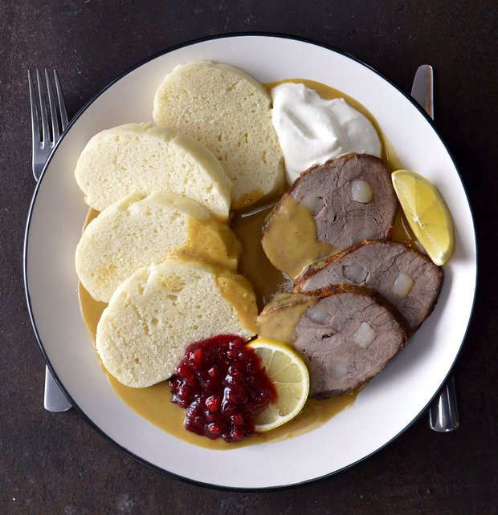

Recept na Svíčkovou

Postup:
Kuřecí maso nakrájíme na kostičky a osmahneme na oleji nebo másle.
Poté přilijeme sterilovanou zeleninovou směs (včetně nálevu) do hrnce a dusíme, dokud maso nezměkne (cca 15 minut).
Maso vyndáme a omáčku rozmixujeme.
Lžíci hladké mouky smícháme se smetanou a vmícháme do rozmixované omáčky, necháme povařit, dokud omáčka nezhoustne.
Můžeme přisladit cukrem a opět vložíme maso.
Příliš hustou omáčku lze naředit vodou.
Aby byla svíčková kompletní, spolu se svíčkovou připravte i domácí staročeské knedlíky.
Ingredience:
1 Smetana ke šlehání
1 sklenice sterilované zeleniny pro přípravu omáčky
1 Lžíce hladký mouky
1 Lžička cukru
100g Kuřecích prsou